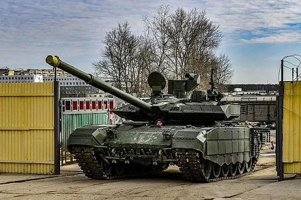
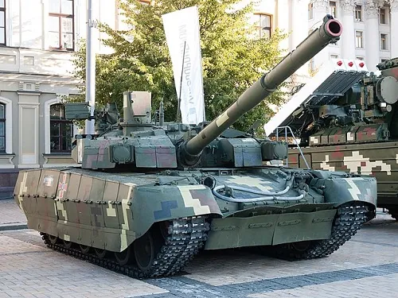
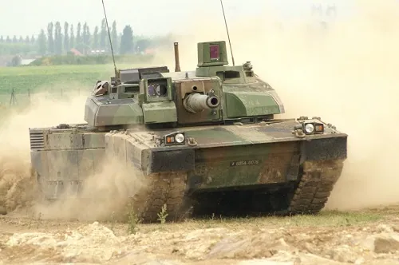
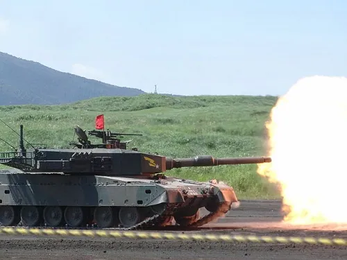
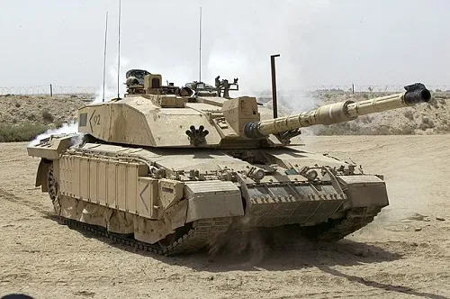
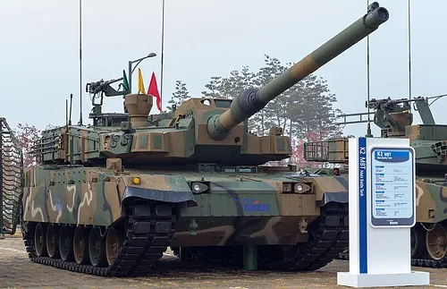
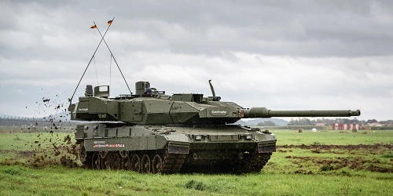

Top 10 best tanks in the world in 2024
A tank is an armoured fighting vehicle intended as a primary offensive weapon in front-line ground combat. Tank designs are a balance of heavy firepower, strong armour, and battlefield mobility provided by tracks and a powerful engine.
Since the Cold War main battle tanks (MBTs) have evolved from being simple and light to heavy, modernised and highly mobile, with advancements in weaponry and countermeasures.
The world of armoured vehicles arouses many people around the world. Battle tanks are upgraded and designed as per the specific requirement of different countries. Some tanks are built with heavy armour while others are light weight. They are differentiated by their firepower, armour and technological advancements in their fire control systems.
In this article we will have a look at 10 most advanced and popular battle tanks of the world.
10. T-90M, Russia
The T-90M, an upgraded version of the T-90, is a Russian third-generation main battle tank (MBT) that entered service with the Russian Army in 2020. It represents a significant advancement over its predecessor and incorporates several notable upgrades.
The T-90M retains the formidable firepower of its predecessor, being armed with a 125mm smoothbore gun capable of firing various types of ammunition, including HEAT, APFSDS, and HE rounds. It also features a coaxial 7.62mm machine gun and a 12.7mm machine gun mounted on the turret, providing additional firepower against both ground and aerial threats.
Powering the T-90M is a robust 1,500 horsepower diesel engine, granting it a top speed of 72 kilometers per hour (45 miles per hour). With a range of 500 kilometers (310 miles), the tank exhibits excellent mobility and operational endurance on various terrains.
The T-90M has garnered praise from military experts worldwide for its exceptional performance in exercises and operations. It is regarded as one of the most advanced MBTs globally, showcasing high mobility, formidable protection, and a powerful armament.
9. Oplot-M, Ukraine
The Oplot-M, developed and manufactured by the Kharkiv Morozov Machine Building Design Bureau in Ukraine, is a main battle tank (MBT) that serves as an upgraded version of the T-84 Oplot. Its initial unveiling took place in 2008, showcasing the advancements made over its predecessor.
Armed with a potent 125mm smoothbore gun, the Oplot-M possesses the capability to engage targets with a variety of ammunition, including HEAT, APFSDS, and HE rounds. Complementing its primary armament, the tank features a coaxial 7.62mm machine gun and a 12.7mm machine gun mounted on the turret, providing additional defensive firepower.
Propelled by a 1,200 horsepower 6TD-2 multifuel, six-cylinder, liquid-cooled diesel engine, the Oplot-M demonstrates exceptional mobility, reaching a maximum on-road speed of 70 km/h. With a range of 500 km, supplemented by additional fuel tanks, the tank exhibits the endurance necessary for sustained operations. Additionally, the Oplot-M features a diesel-electric auxiliary power unit, ensuring the availability of power for onboard systems even when the main engine is turned off.
Regarded as one of the most advanced MBTs in the world, the Oplot-M combines high mobility, robust protection, and a formidable armament. Its exceptional performance has garnered praise from military experts globally, solidifying its position as a vital component of the Ukrainian Army's armored forces.
8. Leclerc, France
The Leclerc, a third-generation main battle tank (MBT) developed and manufactured by Nexter Systems in France, pays homage to Marshal Philippe Leclerc de Hauteclocque, a revered commander of the Free French Forces during World War II. Since its induction into the French Army in 1992, it has replaced the AMX-30 and has been exported to countries such as the United Arab Emirates and Jordan.
Equipped with a formidable 120mm smoothbore gun, the Leclerc possesses the capability to fire a wide range of ammunition, including HEAT, APFSDS, and HE rounds. Complementing its primary armament, the tank features a coaxial 7.62mm machine gun and a 12.7mm machine gun mounted on its turret, bolstering its defensive capabilities.
Powered by a robust 1,500 horsepower diesel engine, the Leclerc demonstrates impressive mobility, reaching a top speed of 72 kilometers per hour. With a range of 450 kilometers, it possesses the endurance necessary for extended operations.
Considered one of the most advanced MBTs in the world, the Leclerc has garnered praise for its exceptional performance in exercises and operations. Its high mobility, reliable protection, and formidable armament contribute to its reputation as a top-tier tank.
7. Type 90, Japan
The Type 90 tank is a main battle tank (MBT) of the Japan Ground Self-Defense Force. It was designed and built by Mitsubishi Heavy Industries to replace the Type 61 tank and complement the existing fleet of Type 74 tanks. The Type 90 entered service in 1990 and is considered a third-generation tank, placing it on par with renowned tanks like the M1 Abrams, Leopard 2, and Challenger 2.
With a crew of three, the Type 90 is armed with a 120mm smoothbore gun, a 7.62mm coaxial machine gun, and a 12.7mm anti-aircraft machine gun. It is also equipped with advanced sensors and systems, including a thermal imager, a laser rangefinder, and a navigation system.
The Type 90 boasts several features that contribute to its formidable reputation. It possesses a well-protected crew compartment, a powerful engine, and a high-performance gun. Additionally, advanced systems such as an active protection system (APS) and a laser warning system make it challenging to neutralize on the battlefield.
While the Type 90 has been utilized in various training exercises, it has not seen combat. Nevertheless, it is widely regarded as one of the most capable tanks in the world and a significant asset to the JGSDF.
6. Merkava Mk.4, Israel
The Merkava Mk.4, the fourth main battle tank (MBT) developed by Israel, entered service with the Israel Defense Forces (IDF) in 2004 and is currently the most advanced tank in the IDF's arsenal. It is a heavily armored tank with a crew of four and is armed with a 120mm smoothbore gun, a 7.62mm coaxial machine gun, and a 12.7mm anti-aircraft machine gun. The tank is equipped with advanced sensors and systems, including a thermal imager, a laser rangefinder, and a navigation system.
One of the standout features of the Merkava Mk.4 is its exceptional survivability. It incorporates thick armor, a well-protected crew compartment, and an active protection system (APS) that can intercept incoming anti-tank missiles and rockets. These features make the tank highly resistant to enemy threats and difficult to destroy.
In addition to its impressive survivability, the Merkava Mk.4 boasts significant firepower. Its 120mm smoothbore gun can fire a range of ammunition, including high-explosive anti-tank (HEAT) rounds, armor-piercing discarding sabot (APFSDS) rounds, and high-explosive (HE) rounds. The tank is also capable of firing guided missiles, providing it with long-range engagement capabilities.
Overall, the Merkava Mk.4 is a highly capable tank that excels in survivability, firepower, and versatility. With its advanced features and proven performance in combat, it is expected to remain in service with the IDF for many years to come, solidifying its position as a cornerstone of Israeli armored warfare.

5. Armata, Russia
The Armata, the first tank in a new family of armored vehicles being developed by Russia, is set to replace the T-90 as the backbone of the Russian armored forces.
Equipped with a 125mm smoothbore gun, the Armata showcases its versatility by being able to fire various types of ammunition, including armor-piercing rounds, high-explosive shells, and anti-tank guided missiles. Its advanced sensors and systems enable the tank to engage targets with precision and effectiveness across long ranges and in all weather conditions.
In terms of mobility, the Armata is highly agile, capable of reaching speeds of up to 70 kilometers per hour. Powered by a formidable 1,500 horsepower diesel engine, it offers a range of over 500 kilometers and the convenience of field refueling.
The Armata's advanced fire control system, featuring a thermal sight, laser rangefinder, and ballistic computer, grants superior accuracy and target engagement capabilities, even at extended distances. Its weapon engagement system allows for the simultaneous engagement of multiple targets, while the new fire control computer enhances accuracy and target tracking.
As a major upgrade over the T-90, the Armata boasts its position as one of the most capable main battle tanks worldwide. It poses a significant threat to enemy armored forces and stands as a valuable asset to any military, showcasing Russia's commitment to advanced armored warfare capabilities.

4. Challenger 2, United Kingdom
The Challenger 2, introduced in 1998, is a British main battle tank (MBT) that serves as the successor to the Challenger 1. It is currently utilized by the British Army and the Royal Jordanian Army.
Equipped with a 120mm smoothbore gun, the Challenger 2 possesses the ability to fire various types of ammunition, including armor-piercing, high-explosive, and anti-tank guided missiles. The tank incorporates advanced sensors and systems that enable effective engagement of targets at long ranges and in diverse weather conditions.
With remarkable mobility, the Challenger 2 can achieve speeds of up to 55 kilometers per hour. Operated by a crew of four, it is powered by a formidable 1,200 horsepower diesel engine. The tank boasts a range exceeding 400 kilometers and can be refueled in-field, enhancing its operational endurance.
The Challenger 2 ranks among the most robustly armored tanks worldwide, benefiting from a combination of rolled homogeneous armor (RHA), Chobham armor, and spaced armor. The tank's active protection system (APS) further enhances its defensive capabilities, intercepting and neutralizing incoming threats.
Considered a substantial upgrade over its predecessor, the Challenger 1, the Challenger 2 stands as one of the most capable MBTs worldwide. Its imposing capabilities pose a significant threat to enemy armored forces, solidifying its value as a prized asset for any military force.
3. K2 Black Panther, South Korea
The K2 Black Panther, developed by the Agency for Defense Development (ADD) and manufactured by Hyundai Rotem, stands as South Korea's triumphant leap in armored warfare. This main battle tank (MBT) was meticulously designed in the 1990s to fulfill the strategic requirements of the Republic of Korea Army, focusing on three-dimensional, high-speed maneuver warfare and network-centric operations. With mass production commencing in 2013, the K2 Black Panther swiftly earned its place among the South Korean armed forces, entering service in July 2014.
Equipped with a formidable 120mm smoothbore gun, the K2 Black Panther showcases its firepower superiority by employing a diverse range of ammunition, including armor-piercing, high-explosive, and anti-tank guided missiles. These capabilities ensure that the tank can effectively engage targets with devastating accuracy, even in challenging weather conditions and at extended ranges.
The K2 Black Panther's state-of-the-art fire control system encompasses advanced components such as thermal sights, laser rangefinders, and ballistic computers. This integrated system provides the tank's crew with exceptional target acquisition and engagement capabilities, allowing them to neutralize threats with unprecedented accuracy, thus ensuring battlefield dominance.
With its 1,500 horsepower diesel engine, the K2 Black Panther achieves remarkable speed and agility, reaching speeds of up to 70 kilometers per hour. This exceptional mobility enables rapid maneuverability across diverse terrains, providing the tank with the flexibility and responsiveness required for dynamic battlefield operations. Additionally, the tank's impressive range of over 450 kilometers and the ability to refuel in the field further enhance its endurance and operational effectiveness.
2. M1A2 SEP Abram, United States
The M1A2 SEP Abrams stands as the epitome of the M1 Abrams main battle tank (MBT) lineage, representing the pinnacle of armored warfare technology within the United States Army. SEP, which stands for System Enhancement Package, denotes a series of continuous upgrades that have been meticulously implemented on this renowned tank over the years. The latest iteration, the M1A2 SEPv3, was introduced in 2020, solidifying the Abrams' position as the most advanced version to date.
Equipped with a formidable array of advanced features, the M1A2 SEP Abrams sets a new standard in MBT capabilities. At the heart of its offensive power lies the 120mm smoothbore gun, which possesses the ability to unleash a variety of ammunition, including armor-piercing, high-explosive, and anti-tank guided missiles. This lethal firepower ensures that the Abrams tanks can effectively engage and neutralize a wide range of threats on the battlefield.
Unyielding protection lies at the core of the M1A2 SEP Abrams' design. Its advanced modular armor system provides enhanced safeguarding against a multitude of threats encountered in modern warfare. Additionally, the tank incorporates an active protection system (APS) that swiftly intercepts and neutralizes incoming projectiles, reinforcing its defensive capabilities and maximizing crew survivability.
In the age of interconnected warfare, the M1A2 SEP Abrams stands out with its digital battlefield network. This cutting-edge system facilitates seamless information sharing between the tank and other friendly forces, enhancing situational awareness, coordination, and the ability to adapt swiftly to changing battlefield conditions.
The M1A2 SEP Abrams is not just an incremental upgrade; it represents a paradigm shift in armored warfare capabilities. With its formidable armor, state-of-the-art fire control system, advanced weapon engagement capabilities, and active protection system, it poses a substantial threat to enemy armored forces. The tank's ability to dominate the modern battlefield is a testament to the relentless pursuit of excellence and technological superiority by the United States Army.

1. Leopard 2A7A1, Germany
The Leopard 2A7A1, the latest addition to the esteemed Leopard 2 family, proudly represents Germany's commitment to maintaining armored superiority. The Leopard 2 was initially manufactured in 1979 by Krauss-Maffei under the commission of the German Ministry of Defence. This formidable main battle tank (MBT) has garnered widespread recognition as one of the most advanced and potent tanks in the world.
Building upon the successes of its predecessor, the Leopard 2A6, the Leopard 2A7A1 boasts a series of notable enhancements that further elevate its capabilities on the battlefield. Let's explore the key improvements that make the Leopard 2A7A1 an exceptional force to be reckoned with.
A new weapon engagement system empowers the Leopard 2A7A1 to engage multiple targets simultaneously. This significant upgrade enhances the tank's situational awareness and combat effectiveness, allowing it to dominate the battlefield with swift and accurate target acquisition. Supported by an advanced fire control computer, the tank achieves improved accuracy and target tracking.
The inclusion of an active protection system sets the Leopard 2A7A1 apart from its predecessors. This cutting-edge system intercepts and destroys incoming threats, adding an extra layer of defense to the tank's formidable armor. With the active protection system, the Leopard 2A7A1 stands ready to neutralize enemy projectiles and safeguard its crew.
The Leopard 2A7A1 excels not only in its advanced features but also in its mobility. Powered by a 1,500 horsepower diesel engine, the tank achieves impressive speeds of up to 72 kilometers per hour. Its high level of mobility enables swift maneuverability across diverse terrains, ensuring operational flexibility and responsiveness in dynamic combat situations. With a range exceeding 450 kilometers, the Leopard 2A7A1 is capable of sustaining operations and can be efficiently refueled in the field.
